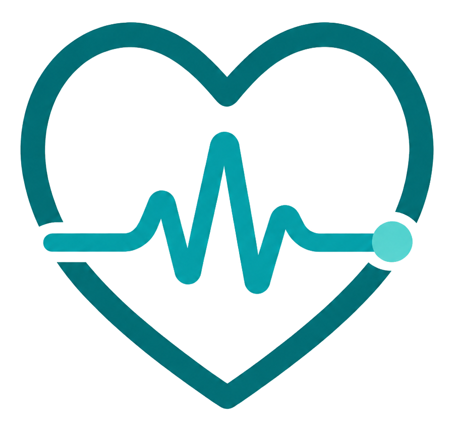
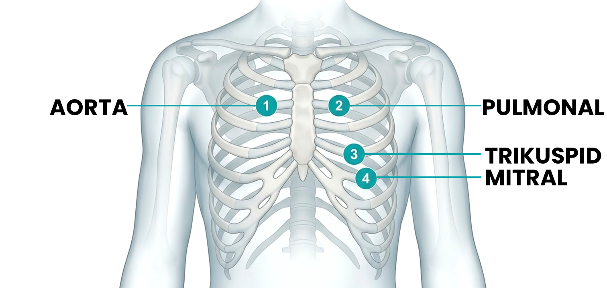
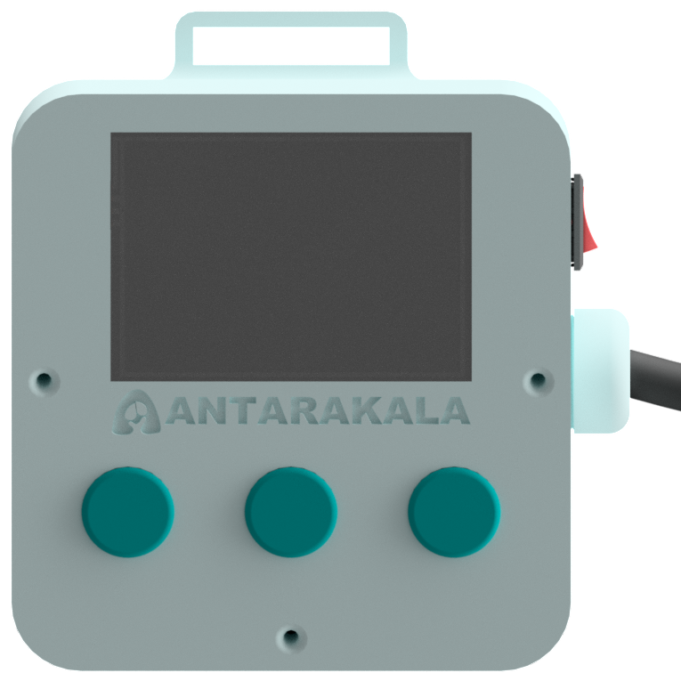
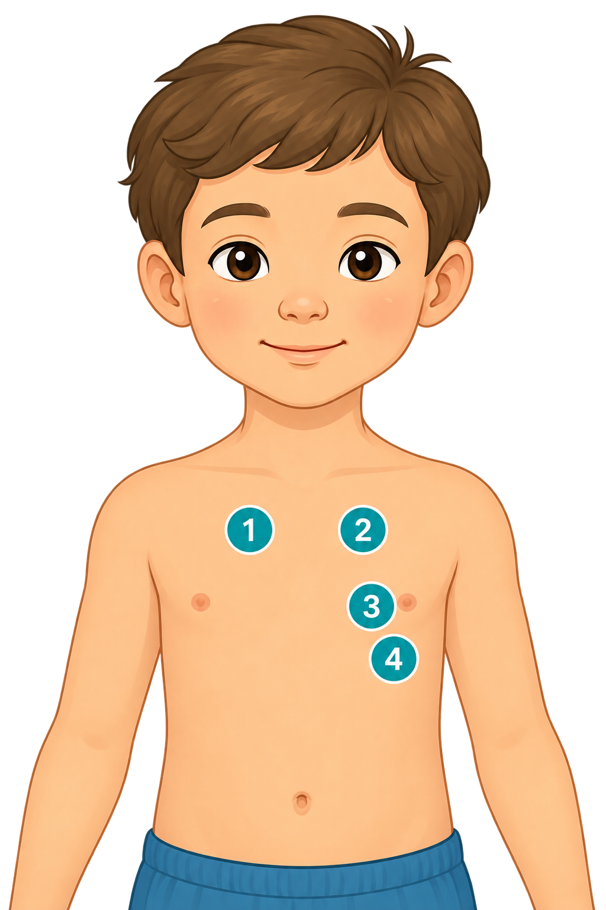
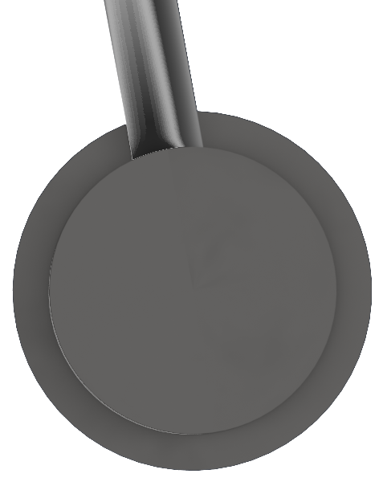

Sambungkan dengan perangkat fisik TWINKHDS untuk memulai deteksi dini kelainan jantung anak secara real-time.

Posisikan pasien berbaring terlentang dan tenang. Area dada dapat diakses dengan mudah.
Kurangi kebisingan di sekitar ruangan untuk memastikan kualitas rekaman auskultasi optimal.
Tempelkan kepala stetoskop langsung ke kulit dada untuk hasil optimal. Kontak melalui kain tipis masih dapat diterima bila diperlukan, namun hindari lapisan kain tebal.
Operasikan perangkat fisik TWINKHDS di samping untuk merekam suara jantung. Layar ini akan mengikuti secara otomatis.
Sistem sedang menganalisis suara jantung dan parameter fisiologis untuk mendeteksi kelainan jantung anak
Harap tidak menutup layar ini hingga analisis selesai untuk akurasi data maksimal.
Tinjauan faktor klinis yang mendasari hasil deteksi dini.
*Visualisasi simulasi untuk demonstrasi antarmuka, bukan spektrogram data real.
Interpretasi Klinis
Memuat interpretasi...
Besar & arah kontribusi tiap faktor, ditampilkan untuk nakes agar hasil lebih mudah dipahami.
Kelipatan rasio kemungkinan Abnormal untuk setiap faktor, dipakai tim internal.


